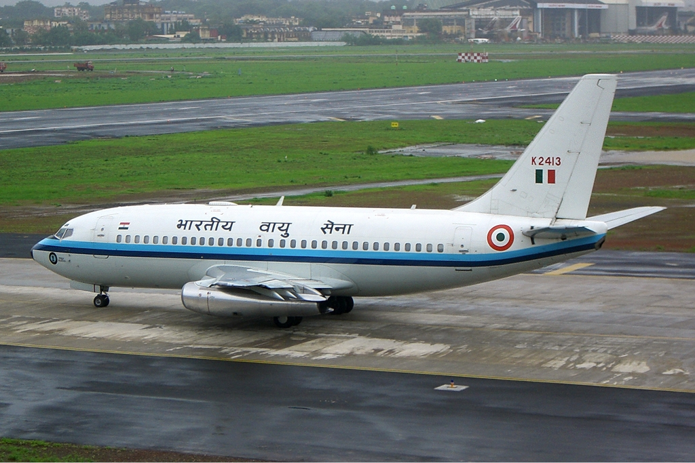
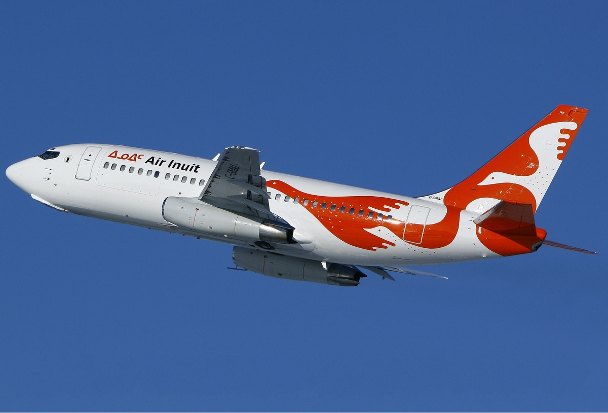

Productia de 737 a inceput in 1966. De atunci, unele companii aeriene si-au retras aeronavele mai vechi, altele le-au pastrat din cateva motive (financiare, fiabilitate, etc.). Dar la momentul actual care sunt cele mai vechi 737 in functiune? Sa aflam.
Cele mai vechi 737 care mai zboara
Cele mai vechi avioane sunt FAP-353 si FAP354 (737-200 si au peste 50 ani) care au avut o istorie lunga. Ambele au zburat initial pentru Aer Lingus (din 1969 pana in 1970) . Apoi, Aer Lingus a închiriat aceste avioane către companii aeriene , inclusiv Air Algiere, Zambia Airlines, Nigeria Airlines și Bahamsaair, printre altele. După câțiva ani de serviciu de pasageri cu o companie aeriană peruviană acum defunctă, s-au alăturat forței aeriene din Peru.
Urmatoarele 2

Urmatoarele 2 aeronave din clasamentul nostru zboara acum pentru Fortele aeriene din India. Acestea sunt K3187 si K3186, care au peste 49 de ani. Ele au fost livrate la inceput catre Indian Airlines in 1971. La începutul anilor ’90 aceste avioane au fost transferate la Fortele aeriene Indiene.
Cele mai vechi aeronave in serviciu de pasageri
In 1974 C-GNLK, un Boeing 737- 200 era livrat catre Transavia. Din 2014, C-GNLK impreuna cu C-GNLE zboara pentru Nolidor Aviation in Canada. Aceasta este o companie charter care zboara cu cele mai vechi Boeing 737-200 din toata lumea, avand 45 de ani.
Venezolana si batranul 737-200
Venezolana are in uz un 737-200 (YW502T) care are 42 de ani.
Air Inuit si sfarsitul clasamentului

Air Inuit are un 737-200 (C-GMAI) care are tot 42 de ani.